Aviationology
Home |
About |
Airbus |
Bombardier |
Boeing |
Cessna |
Videos |
Facts |
Welcome to the Bombardier Page! Bombardier Inc. (French pronunciation: [bɔ̃baʁdje]) is a Canadian manufacturer of business jets. It was also formerly a manufacturer of commercial jets, public transport vehicles, trains, and recreational vehicles, with the last being spun-off as Bombardier Recreational Products. The company originally produced snowmobiles, over the years it expanded into the aviation, rail, and public transit businesses. Bombardier manufactures several series of corporate jets, Global 7500, Global Express, Challenger 600, Challenger 300, and Learjet 70/75.
After acquiring Canadair in 1986 and restoring it to profitability, in 1989 Bombardier acquired the near-bankrupt Short Brothers aircraft manufacturing company in Belfast, Northern Ireland. This was followed in 1990 by the acquisition of the bankrupt American company Learjet, a manufacturer of business jets headquartered in Wichita, Kansas; and finally the money-losing Boeing subsidiary, de Havilland Aircraft of Canada based in Toronto, Ontario in 1992.[ The aerospace company[when?] accounts for over half of Bombardier Inc.'s revenue. By the start of the 2010s, its most popular aircraft included its Dash 8 Series 400, CRJ100/200/440, and CRJ700/900/1000 lines of regional airliners although the company was devoting most of its Research and Development budget to the newer CSeries. It also manufactured the Bombardier 415 amphibious water-bomber (in Dorval and North Bay), and the Global Express and the Challenger lines of business jets. The CSeries, which Bombardier offered in several size versions, initially competed with the Airbus A318 and Airbus A319; the Boeing 737 Next Generation 737-600 and 737-700 models; and the Embraer 195. Bombardier claimed the CSeries would burn 20% less fuel per trip than these competitors,[4] which would make it still about 8% more fuel efficient than the Boeing 737 MAX, which was introduced in 2017. The launch customer for the CSeries, Lufthansa, signed a letter of intent for up to 60 aircraft and 30 options in 2008. The Montreal manufacturing complex was redeveloped by Ghafari Associates to incorporate lean manufacturing for the CSeries.
The Learjet is a mid-size cabin, medium-range business jet aircraft manufactured by Bombardier Aerospace in Wichita, Kansas. Powered by two Pratt & Whitney Canada PW305A engines, it has a range (with 4 passengers and 2 crew) of 2,405 nautical miles (4,454 km) with NBAA 100 nmi (190 km) reserves, ISA.[2] In July 2012 Bombardier Aerospace announced a temporary "production pause" of the latest variant Learjet 60XR to begin in the fourth quarter of 2012.[3][4]
The De Havilland Canada DHC-8,[2] commonly known as the Dash 8, is a series of turboprop-powered regional airliners, introduced by de Havilland Canada (DHC) in 1984. DHC was later bought by Boeing in 1988, then by Bombardier in 1992; then by Longview Aviation Capital in 2019, reviving the de Havilland Canada brand. Powered by two Pratt & Whitney Canada PW100s, it was developed from the Dash 7 with improved cruise performance and lower operational costs, but without STOL performance. Three sizes were offered: initially the 37–40 seat -100 until 2005 and the more powerful -200 from 1995, the stretched 50–56 seats -300 from 1989, both until 2009, and the 68–90 seats -400 from 1999, still in production. The Q Series are post-1997 variants fitted with active noise control systems.
The Bombardier Challenger 600 series is a family of business jets developed by Canadair after a Bill Lear concept, and then produced from 1986 by its new owner, Bombardier Aerospace. At the end of 1975, Canadair began funding the development of LearStar 600, and then bought the design for a wide-cabin business jet in April 1976. On 29 October, the programme was launched, backed by the Canadian federal government, and designed to comply with new FAR part 25 standards.
The Bombardier CRJ100 and CRJ200 (previously Canadair CRJ100 and CRJ200) is a regional jet designed and manufactured by Bombardier Aerospace between 1991 and 2006, the first of the Bombardier CRJ family.
An initial effort to enlarge the Bombardier Challenger 600 business jet to 36 seats, the Challenger 610E, ended in 1981. A stretched derivative was studied again after Canadair's sale to Bombardier in 1986. The Canadair Regional Jet program was launched in early 1989. The first CRJ100 prototype made its maiden flight on 10 May 1991. Canada's first jet airliner to enter commercial service was introduced by launch customer Lufthansa in 1992.
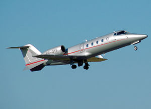Learjet Taking-Off
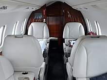Cabin
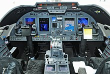Cockpit
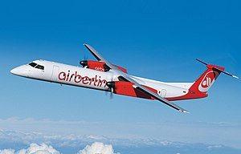Dash Under Flight
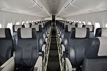Cabin
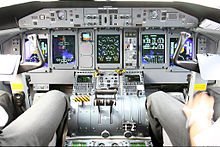Cockpit
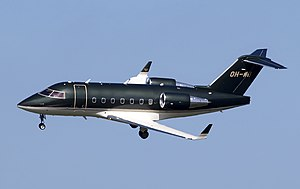Challenger Taking-Off
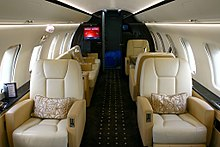Cabin
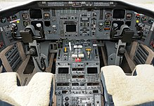Cockpit
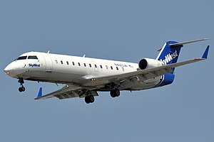CRJ100 Taking-Off
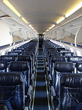Cabin
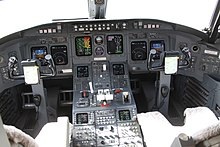Cockpit